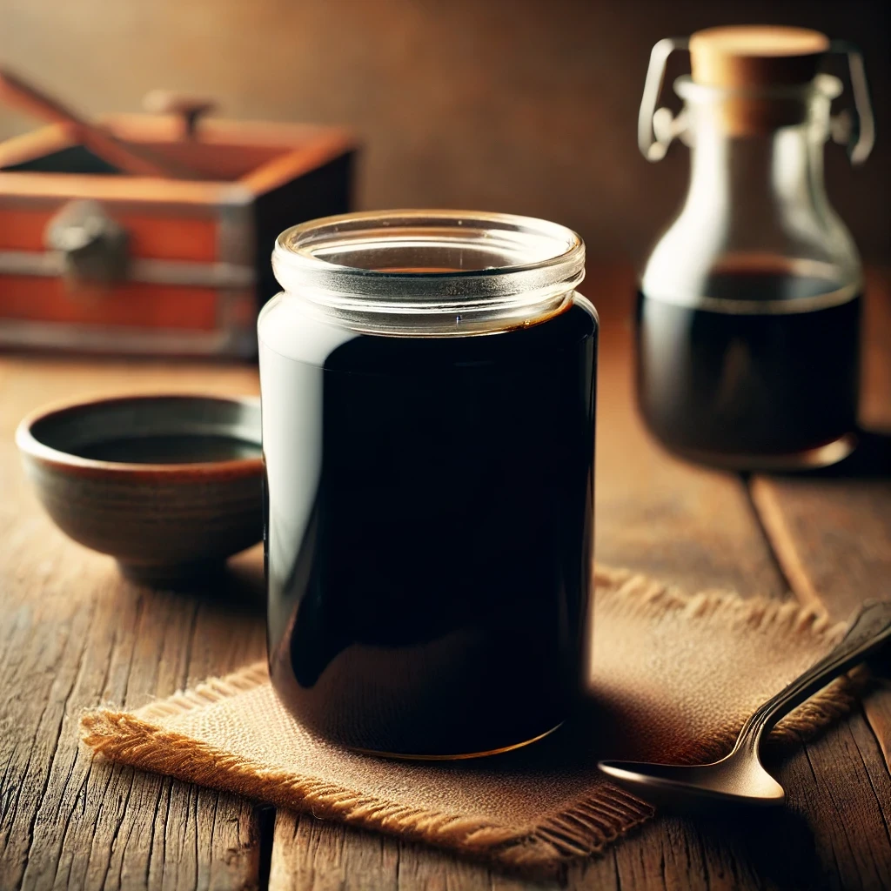

Recipe Name

Description
his tare has a rich umami base, balancing the saltiness and depth of the various soy sauces
with a layered complexity from the seafood and mushroom components. Use 1–2 tablespoons per bowl
of ramen to start, adjusting to taste.
Ingredients
- 薄口醤油 (light soy sauce): 200 ml
- 濃口醤油 (dark soy sauce): 300 ml
- 鰹出汁醤油 (bonito soy sauce): 100 ml
- 紹興酒 (Shaoxing wine): 30 ml
- 辛口日本酒 (dry sake): 30 ml
- みりん (mirin): 50 ml
- ニンニク (garlic): 3 cloves, crushed
- ネギ (green onion): 1 large stalk, chopped
- 干し椎茸 (dried shiitake): 1 large mushroom, broken into pieces
- 砂糖 (sugar): 1–2 tablespoons (adjust based on desired sweetness)
- 粉末煮干し (dried sardine powder): 1 tablespoon
- むきあさり (shelled clams): 50 grams
- 味の素 (MSG): 1 teaspoon
- 鰹節 (bonito flakes): 10 grams
- 昆布 (kombu): 5 cm piece
- 鶏ガラスープパウダー (chicken stock powder): 1 tablespoon
Steps
- Combine Liquids: In a saucepan, add light soy sauce, dark soy sauce,
bonito soy sauce, Shaoxing wine, dry sake, and mirin. Heat gently over
medium-low heat, taking care not to boil.
- Add Aromatics: Add the garlic, green onion, dried shiitake, sugar,
dried sardine powder, shelled clams, and MSG. Let this mixture heat gently
for about 10 minutes.
- Add Umami Ingredients: Add the bonito flakes, kombu, and chicken stock powder.
Reduce the heat to low and simmer gently for an additional 10–15 minutes.
- Steep and Strain: Remove from heat and let the mixture steep for another 30 minutes
to an hour to allow flavors to develop. Strain through a fine-mesh strainer, pressing the
solids to extract maximum flavor.
- Store: Pour the strained tare into a clean jar or bottle. This can be stored in the
refrigerator for up to 1–2 weeks.